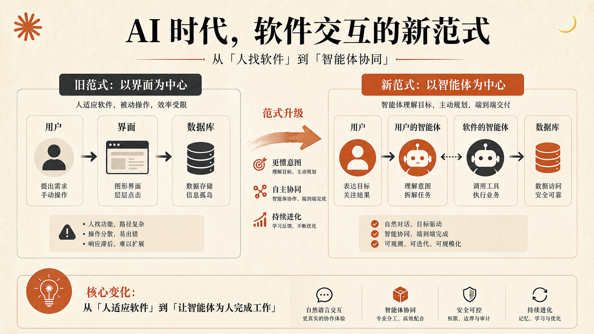
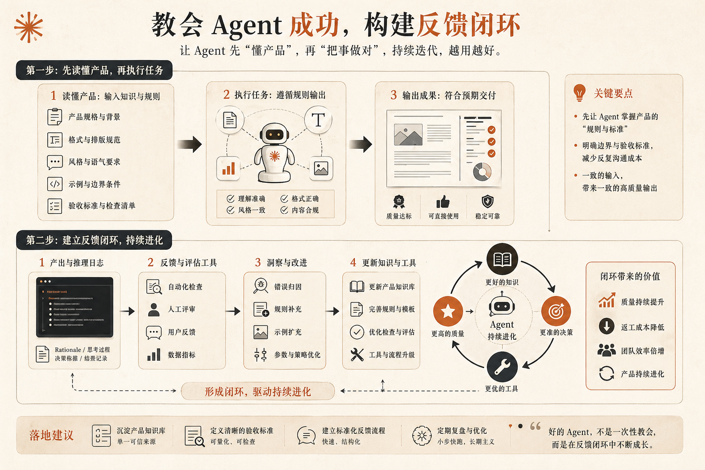

过去二十年，我们默认的软件使用方式一直很稳定：
人打开界面。
点按钮。
填表单。
看结果。
几乎所有产品设计、交互设计、信息架构、权限体系，都是围绕这条链路搭起来的。
但现在，一个非常大的变化已经开始发生了：
越来越多的软件，不再先被人类点击，而是先被 Agent 调用。
也就是说，真正和系统发生高频交互的，开始不再是“人”，而是“代表人的智能体”。
这件事的影响，比很多人想象中大得多。
因为它改变的不只是入口，而是产品本身的设计逻辑。
以前，一个产品最重要的问题是：
而现在，新的问题变成了：
很多人说“UI 已死”，我不完全同意。
人类当然还是需要界面，需要确认，需要回看，需要点开检查细节。
但真正值得注意的是另一件事：
软件的主要交互对象，正在从人类切换成 Agent。
这会重新定义我们该怎么做产品。
过去最常见的软件交互结构，可以简化成这样：
用户 -> 界面 -> 数据库
界面就是产品。
你通过界面理解产品、操作产品、完成任务。
但当 Agent 开始替用户承担越来越多的工作之后，中间那一层就变了。
现在更常见的情况，是：
用户 -> 用户自己的 Agent -> 系统
比如用户不再自己打开报销系统，而是让自己的 Agent 去完成：
在这个模型里，用户看到的已经不是“产品页面”，而是 Agent 给出的结果。
但变化还不止于此。
因为随着软件公司也开始构建自己的 Agent，新的结构很快又变成了：
用户 -> 用户的 Agent -> 软件自己的 Agent -> 数据系统

这意味着什么？
意味着未来很多软件交互，不再是“一个人类对着一个 UI 做操作”，而是“两边的 Agent 在相互协作，替人类完成结果”。
一边带着用户上下文。
一边带着系统上下文。
真正的产品设计工作，也就从“设计界面”开始转向“设计这两个 Agent 如何协作”。
现在很多团队一提到 AI 时代的软件升级，第一反应是：
“我们也要上 MCP。”
这当然没错。
但如果只是把 API 包一层、把工具暴露出来、勾上一个“支持 Agent 使用”的框，事情其实只做了一半。
因为 Agent 能不能调用，和 Agent 能不能稳定成功地调用，是两回事。
差别在于，你有没有认真想过：
调用你产品的那个 Agent，到底需要什么信息，才能把事情做好？
这其实是 Agent 时代最关键的问题之一。
很多团队会把规范放在文档里，然后觉得任务完成了。
但对 Agent 来说，文档放在那里，并不等于它会在正确的时间、正确的上下文中用对。
一个真正为 Agent 设计的系统，应该主动把成功所需的信息喂给调用方，而不是让它自己猜。
这件事最典型的例子，就是格式和规则。
为什么有些系统，Agent 一写进去就非常稳定？
不是因为模型突然变聪明了，而是因为产品已经明确告诉它：
一旦规则被明确给到，Agent 的成功率会非常高。
反过来，如果系统把这些东西都藏在网页文档里，或者默认调用方自己应该知道，那结果通常就是：
所以，为 Agent 设计的核心不是“开放能力”，而是：
教会调用你系统的 Agent，怎样才能成功。
这和过去写开发者文档很像，但比文档更进一步。
因为现在你面对的不再只是人类开发者，而是一个会在运行时即时决策的智能调用方。
很多团队在接入 Agent 能力时，还有一个典型问题：
能看到调用量。
却看不到调用背后的意图。
比如你知道某个工具被调用了 10 万次，但你并不知道：
这时候，单看“调用次数”几乎没有意义。
你真正需要的，是反馈回路。

一套成熟的 Agent 产品，至少应该能逐步回答下面这些问题：
这时候，产品改进就不再只是拍脑袋。
你会发现，Agent 给你的反馈，往往比很多真实用户还更结构化：
如果把这些信息收集好，你就会开始看到一条非常有意思的产品演进路径：
最初，Agent 只是你的调用方。
后来，Agent 开始反过来告诉你：
你的产品下一步应该补什么。
这时候，反馈回路就不只是“排查问题”的工具，而变成了产品增长机制的一部分。
Agent 之间协作时，最重要的一件事，不是彼此谁更强，而是谁知道什么。
因为在任何一个 Agent-to-Agent 的交互里，两边掌握的上下文天然就是不对称的。
用户侧的 Agent，可能知道：
软件侧的 Agent，则可能知道：
这就意味着，一个设计得不好的系统，会把本来应该自己处理的复杂度甩回给用户：
而设计得好的系统，会做相反的事情：
它不会把自己拥有的复杂性推给对方，而是只向对方要它真正缺失的那一小块上下文。
比如，系统真正不知道的，不一定是某个内部编码，而是：
一旦用户侧 Agent 能根据日历、邮件、聊天记录补出这个上下文，系统侧 Agent 就可以在内部自动完成编码、分类和处理。
这就是 Agent 时代产品设计最值得重视的一点：
不要把系统内部复杂性抛给调用方，而是设计好双方如何用各自掌握的上下文拼出正确结果。
以前做产品，很大一部分工作是在回答：
以后这些当然还重要。
但你会越来越频繁地面对另一类问题：
换句话说，产品团队正在从“设计给人类点”的岗位，逐步变成“设计给 Agent 协作”的岗位。
而一个产品能不能在这个阶段跑出来，很可能就取决于它有没有认真处理这些细节。
很多公司接下来都会补一层 MCP、补一组工具、补一套 API，然后宣布自己已经“支持 Agent”。
但真正能在下一轮竞争里拉开差距的，不会是那些只把接口开放出来的产品。
而会是那些认真想清楚了这几个问题的产品：
归根结底，Agent 时代的软件设计，问的还是同一个问题：
调用你系统的那个智能体，到底需要什么，才能把它的工作做好？
如果你把这件事想透了，你做的就不再只是一个“能被 Agent 使用的产品”。
你做的是一个真正为 Agent 而设计的产品。